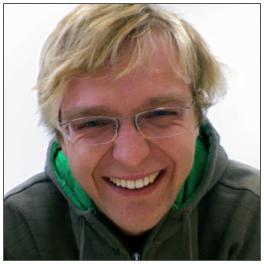

I do Machine Learning
– estimation of models and representations from data.
Mostly unsupervised learning, with a focus on deep models and
large scale data analysis. I like programming.
I also find Optimization, Probability Theory, Information Theory and
Linear Algebra fun.